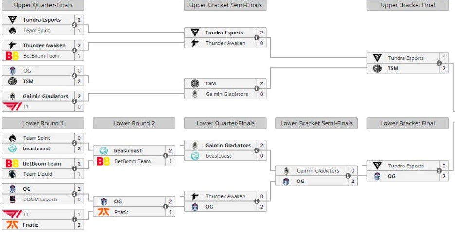

El segunto tour llegaria a ser muy peleado por todos los equipos que apenas definieron los puestos de clasificacion en la ultima jornada dejando a thunder awaken como primero y beast coast como segundo clasificando asi a el major
Y en el major beastcoast y thunder awaken darian una sorpresa no solo a nosotros los sudamericanos sino a todo el mundo quedando ambos en el top 6 igualando la hazaña de thunder predator en el 2021 llevandose un muy buen premio en efectivo pero lo que es mas importante llevando puntos DPC que los ayudan a ser favoritos a ambos a llegar al TI 2022